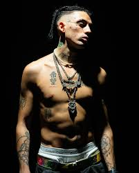
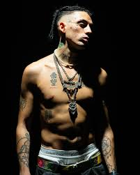
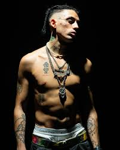

Khea, un destacado artista del trap argentino, comenzó su carrera en las batallas de rap en Buenos Aires, donde se hizo conocido junto a figuras como Duki y Cazzu. En 2017, lanzó el exitoso tema "Loca" en colaboración con Duki y Cazzu, que más tarde tuvo un remix con Bad Bunny. Su sencillo "She Don't Give a Fo" acumuló más de 520 millones de vistas en YouTube.
En 2019, realizó su tour "Vida Young Flex", convirtiéndose en el primer argentino en actuar en Tomorrowland y alcanzando 14 millones de oyentes mensuales en Spotify. En 2020, lanzó el mixtape "Trapicheo", con colaboraciones de artistas reconocidos como Duki y Seven Kayne, y participó en la famosa "BZRP Music Sessions" con Bizarrap, que se volvió viral.
Tras varios éxitos en 2021 y 2022, Khea tomó un descanso para enfocarse en su salud mental. En 2023, regresó con su álbum "Serotonina", que presenta una mezcla de géneros como rock alternativo y reggaetón, tocando temas de depresión y vulnerabilidad. Este álbum fue bien recibido y presentado en un sold-out en el Teatro Gran Rex.
En enero de 2024, lanzó "Hola perdida" junto a Luck Ra, y anunció un deluxe de "Serotonina" con remixes. Además, el 13 de marzo de 2024, lanzó el mixtape "Trapicheo: El Don", con colaboraciones de varios artistas, reafirmando su posición en la escena musical actual. Su evolución artística y su capacidad para conectar con el público lo han consolidado como un referente en el trap latino.
